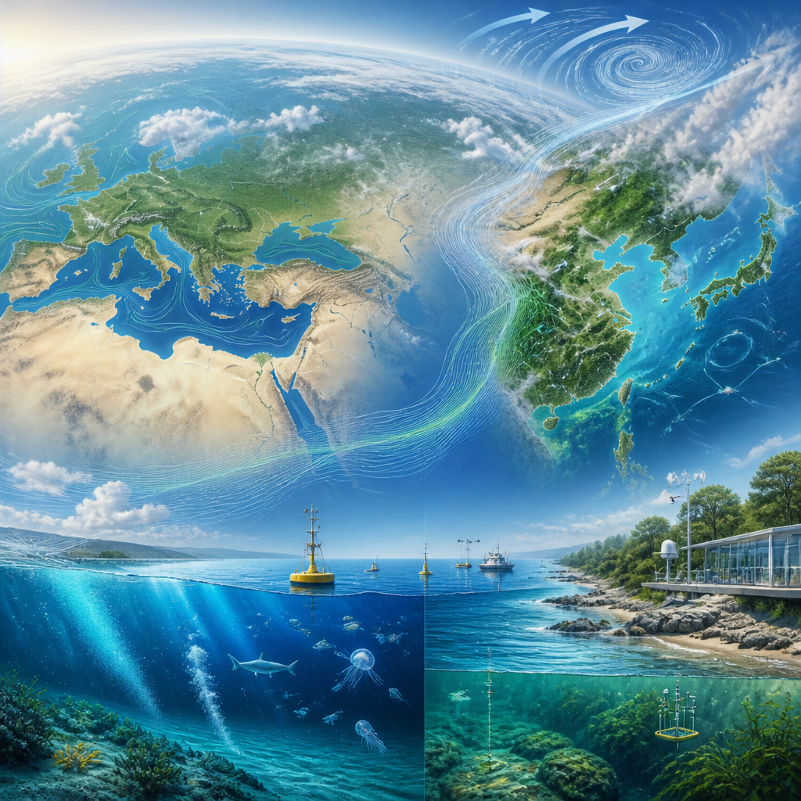
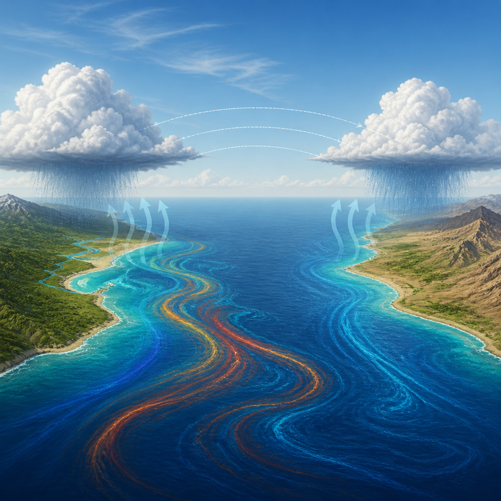

Un incontro a Guangzhou mette in dialogo previsione climatica, intelligenza artificiale e resilienza delle coste.
Oceani, atmosfera e coste non seguono i confini nazionali. Per comprenderne le dinamiche e migliorare le previsioni climatiche servono osservazioni, metodi e competenze che mettano in relazione regioni diverse del pianeta. È in questa prospettiva che la Fondazione CMCC rafforza il proprio impegno scientifico con la Cina attraverso il Workshop Cina–Italia per il progresso delle scienze oceaniche e climatiche, svolto l’8 e 9 novembre 2026 alla Sun Yat-sen University di Guangzhou.
L’iniziativa è stata co-organizzata da CMCC, Sun Yat-sen University, Università di Bologna e Centro collaborativo del Decennio delle Nazioni Unite per la resilienza costiera. Il programma ha riunito scienziati e rappresentanti istituzionali dei due Paesi con un obiettivo comune: scambiare conoscenze, individuare priorità di ricerca condivise ed esplorare possibili collaborazioni future.
Il cambiamento climatico pone sfide connesse tra loro, che vanno oltre le dimensioni nazionali e regionali. Studiare il sistema climatico globale, rendere più efficaci le capacità di previsione e progettare strategie di adattamento richiede una cooperazione continua tra istituzioni di ricerca con competenze complementari.
La collaborazione fra scienziati europei e cinesi offre l’opportunità di collegare ricerche condotte in bacini oceanici e regioni climatiche differenti. Il confronto può favorire la condivisione di metodi avanzati di modellistica, cioè strumenti che rappresentano con modelli il comportamento del clima e dell’oceano, e accelerare l’innovazione scientifica.
La partnership con la Sun Yat-sen University è rilevante per le sue competenze in oceanografia, scienze dell’atmosfera e dinamiche climatiche regionali. Mettere a confronto le prospettive di ricerca del Mediterraneo e dell’Asia orientale può ampliare la comprensione delle interazioni fra oceano e atmosfera, della variabilità del clima e degli eventi estremi. Allo stesso tempo, apre possibilità per studi comparativi e iniziative scientifiche comuni.

Il CMCC ha avuto un ruolo centrale nel programma scientifico delle due giornate. I contributi hanno riguardato l’intelligenza artificiale, l’uso di sistemi informatici capaci di elaborare dati e individuare schemi, le previsioni del clima e dell’oceano, gli eventi estremi, i gemelli digitali costieri e le soluzioni basate sulla natura.
Antonio Navarra, presidente della Fondazione CMCC, ha co-presieduto la sessione dedicata alla prevedibilità meteorologica e climatica e all’intelligenza artificiale, presentando sviluppi nelle previsioni stagionali basate sull’intelligenza artificiale. Le previsioni stagionali indicano l’evoluzione attesa del clima su una scala di mesi. Emanuela Clementi e Francesco Maicu hanno portato contributi sulla previsione oceanica e sulla modellistica multiscala degli eventi estremi, un approccio che considera fenomeni osservati a scale diverse. Nadia Pinardi ha co-presieduto la sessione sulla variabilità dei monsoni e il cambiamento climatico.
La seconda giornata si è concentrata sulla resilienza costiera, cioè la capacità delle aree costiere di affrontare e adattarsi ai rischi. Giovanni Coppini, direttore di programma del CMCC, ha co-presieduto la sessione scientifica e presentato soluzioni basate sul cloud per applicazioni costiere. Riccardo Valentini, Maria Vincenza Chiriacò e Ivan Federico hanno affrontato gemelli digitali, soluzioni basate sulla natura e approcci innovativi all’adattamento delle coste.
Un gemello digitale è una rappresentazione digitale di un sistema reale, utile per analizzarne il comportamento. Le soluzioni basate sulla natura, invece, puntano a utilizzare processi e caratteristiche naturali nell’affrontare le sfide ambientali. Nel loro insieme, gli interventi hanno mostrato come la ricerca climatica di base possa essere collegata a tecnologie avanzate e applicazioni dedicate alla resilienza ambientale.
L’incontro non è stato soltanto uno spazio per presentare risultati di ricerca. Ha offerto anche l’occasione per discutere come la cooperazione tra CMCC e istituzioni cinesi possa evolvere in partnership di ricerca durature. Tra le possibili aree di lavoro figurano l’integrazione dell’intelligenza artificiale nelle previsioni climatiche e oceaniche, lo sviluppo di modellistica avanzata e tecnologie di gemello digitale, oltre a nuovi approcci per valutare il rischio costiero e sostenere l’adattamento.
In un contesto scientifico nel quale competenze regionali differenti, capacità di calcolo e metodologie complementari possono rendere più rapido il progresso, questa cooperazione può contribuire a previsioni più affidabili e a servizi climatici più efficaci. Il coinvolgimento di giovani professionisti dell’oceano e studenti ha inoltre evidenziato l’importanza di creare occasioni di scambio per la prossima generazione di ricercatori e di costruire reti professionali durature.
Il workshop di Guangzhou consolida il dialogo tra CMCC e istituzioni cinesi su clima, oceano e resilienza costiera. Le priorità discusse includono intelligenza artificiale per le previsioni, modellistica, gemelli digitali e adattamento delle coste.
Questo articolo l'hai letto sul blog di Meteo News Radar: un'app che ti mostra da dove vengono i numeri, invece di limitarsi a dartelo. E ogni mattina ne trovi uno nuovo come questo.